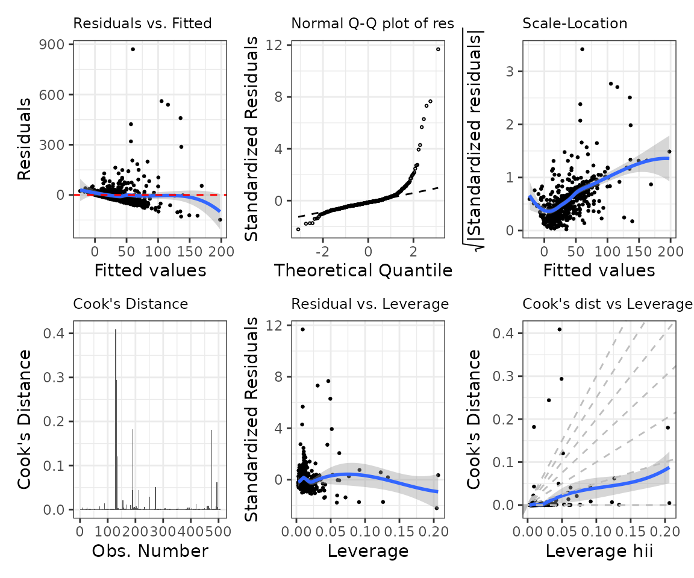
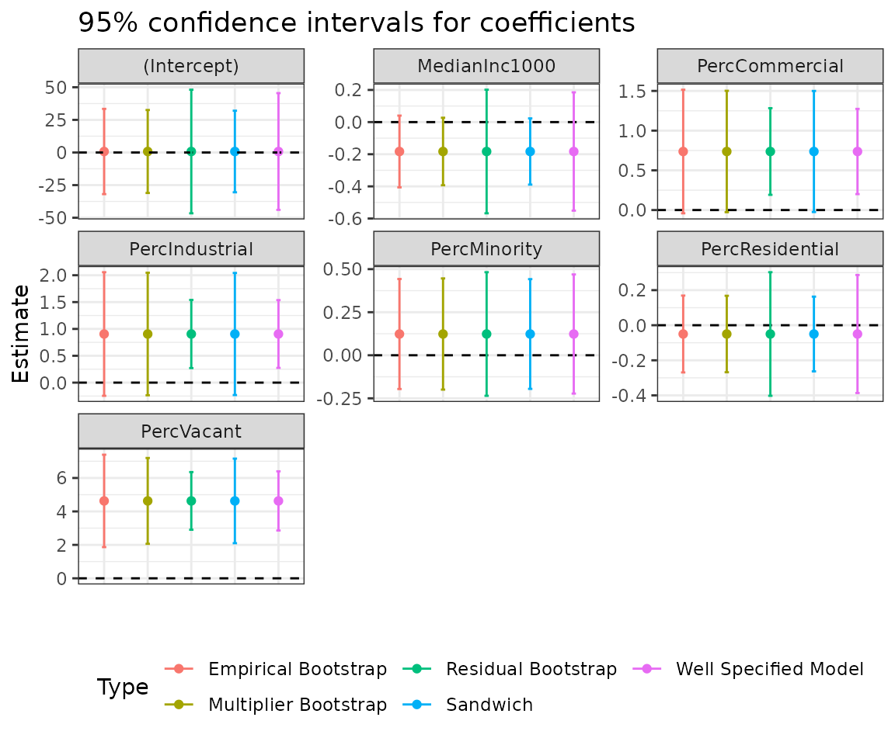
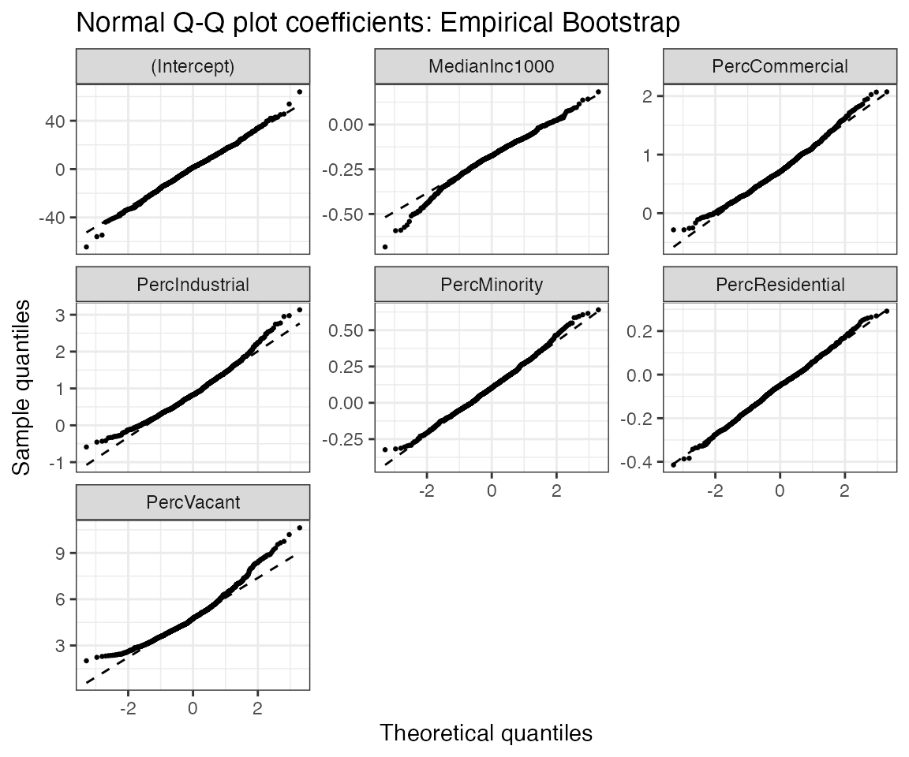

vignettes/se-la-county-data.Rmd
se-la-county-data.RmdFirst, we’ll need to install a set of packages that will be useful for the analysis. If you are a new user, you will need to manually run the following commands in a new in an R session before running the vignette code below:
Required package installation and load
# Install the required packages
install.packages(pkgs = c(
"glue", "knitr", "tidyverse", "kableExtra",
"remotes", "patchwork"
))
# Install the latest version of the maars package
remotes::install_github("shamindras/maars", force = TRUE)
# Load the required packages
library(glue)
library(knitr)
library(maars)
library(tidyverse)
library(kableExtra)
library(remotes)
library(patchwork)Note that we use the pipe (%>%) operator loaded from the tidyverse package as part of the tidy maars inferential workflow. We will also set a global random seed for reproducibility purposes.
set.seed(25422267)We will refer to all other functions explicitly using the package::function() reference method to avoid any function reference source ambiguity.
In this vignette, we will reproduce the results of Table 1 in (Buja et al. 2019), as shown below:
Table 1 from (Buja et al. 2019)
Let’s first load the LA County Homeless persons data as used in (Buja et al. 2019) and briefly examine it. The dataset is included in the maars package for convenience.
# LA County source data - already built into maars
data("la_county", package = "maars")
dim(x = la_county)
#> [1] 505 7So the dataset is relatively small with 505 observations and 7 features.
Let’s view the data interactively, with an emphasis on the first few rows. This is to get a better understanding of the structure of the la_county tibble.
la_county %>%
head(x = .) %>%
knitr::kable(x = ., format = "html", digits = 2, align = "c") %>%
kableExtra::kable_styling(position = "center") %>%
kableExtra::kable_classic(kable_input = .)| StreetTotal | MedianInc1000 | PercVacant | PercMinority | PercResidential | PercCommercial | PercIndustrial |
|---|---|---|---|---|---|---|
| 2 | 41.58 | 2.58 | 30.47 | 86.68 | 12.23 | 0.00 |
| 0 | 53.48 | 2.84 | 16.92 | 12.09 | 0.26 | 0.00 |
| 6 | 35.24 | 2.03 | 64.39 | 15.83 | 5.66 | 4.31 |
| 4 | 36.68 | 3.13 | 63.71 | 29.81 | 3.69 | 4.68 |
| 5 | 30.87 | 1.58 | 61.50 | 72.81 | 20.37 | 0.00 |
| 18 | 50.71 | 2.54 | 46.61 | 42.66 | 19.33 | 0.00 |
The la_county dataset is already in tidy format (Wickham 2014).
We now fit a linear model of the count of homeless people (StreetTotal) as the response variable, against the other covariates using Ordinary Least Squares (OLS). As usual, this can be done via the stats::lm() function.
mod_fit <- stats::lm(formula = StreetTotal ~ ., data = la_county)The most important thing to note at this stage is that the inference provided by the mod_fit (i.e. lm) object is based on the typical well-specified assumption setting. That is this fitted linear model assumes the linearity of the conditional expectation and the homoscedasticity of errors.
The goal of maars is to take the same OLS estimates for the fitted model parameters but augment the inference to be based in the model misspecified setting. This is done in the following sections, and drives the remainder of this reproducibility analysis.
As done in (Buja et al. 2019) let’s estimate the variance of the regression coefficients for the fitted model using model misspecified assumptions using the following approaches:
To do so, we will use the comp_var function in maars. This arguments in this function are the output of stats::lm() (i.e., mod_fit) and the types of estimators (of the variance) that we wish to use, with the specific parameters. The sandwich variance is always computed by default so there is no need to specify it.
mms_fit <- comp_var(
mod_fit = mod_fit,
boot_emp = list(B = 10^3),
boot_mul = list(B = 10^3, weights_type = "rademacher"),
boot_res = list(B = 10^3)
)The resulting model misspecified linear model fit i.e. mms_fit is now a (maars_lm, lm) object. With this object constructed, we now have all of the ingredients necessary to reproduce Table 1 of the (Buja et al. 2019) paper.
In order to reproduce Table 1, we will only need the empirical bootstrap and sandwich estimates. In maars, the estimates, standard errors, \(t\)-statistics, and \(p\)-values can be obtained in a tidy output format via the function get_summary. This function returns the sandwich, again, returned by default, unless specified otherwise. Let’s first extract the summary of mms_fit.
# get output
mms_summary <- get_summary(mms_fit, sand = TRUE,
boot_emp = TRUE,
well_specified = TRUE)
# print heading
head(mms_summary) %>%
knitr::kable(x = ., format = "html", digits = 3, align = "c") %>%
kableExtra::kable_styling(position = "center") %>%
kableExtra::kable_classic(kable_input = .)| term | estimate | stat_type | stat_val | var_type_abb |
|---|---|---|---|---|
| (Intercept) | 0.760 | std.error | 22.767 | lm |
| (Intercept) | 0.760 | statistic | 0.033 | lm |
| (Intercept) | 0.760 | p.value | 0.973 | lm |
| MedianInc1000 | -0.183 | std.error | 0.187 | lm |
| MedianInc1000 | -0.183 | statistic | -0.977 | lm |
| MedianInc1000 | -0.183 | p.value | 0.329 | lm |
As we can see, the output is in tidy tibble format. This makes it much more readily amenable for additional transformations using the tidyverse set of packages.
We can now reformat the output of get_summary to make it more easily comparable to Table 1 in the paper. This can be achieved by first dropping the p-values (which are not needed), followed by the computation of the ratios of the variances, and last by an application of the tidyr::pivot_wider() function. We also need add in the required \(\LaTeX\) code for the column names to reproduce values and formatting as in the original table.
mms_summary %>%
# drop the p-values
dplyr::filter(stat_type != "p.value") %>%
# compute the variances
tidyr::pivot_wider(
names_from = c(stat_type, var_type_abb),
values_from = stat_val
) %>%
# compute the ratios
dplyr::mutate(
ratio_emp_vs_lm = std.error_emp / std.error_lm,
ratio_sand_vs_lm = std.error_sand / std.error_emp,
ratio_sand_vs_emp = std.error_sand / std.error_emp
) %>%
# reorder the variables
dplyr::select(
term,
estimate,
starts_with("std.error"),
starts_with("ratio"),
starts_with("statistic")
) %>%
# rename the variables
purrr::set_names(x = ., nm = c(
"Term", "$\\widehat{\\beta}_{j}$",
"$SE_{\\text{lin}}$",
"$SE_{\\text{boot}}$",
"$SE_{\\text{sand}}$",
"$\\frac{SE_{\\text{boot}}}{SE_{\\text{lin}}}$",
"$\\frac{SE_{\\text{sand}}}{SE_{\\text{lin}}}$",
"$\\frac{SE_{\\text{sand}}}{SE_{\\text{boot}}}$",
"$t_{\\text{lin}}$",
"$t_{\\text{boot}}$",
"$t_{\\text{sand}}$"
)) %>%
knitr::kable(
x = ., format = "html", digits = 3,
align = "c", escape = TRUE
) %>%
kableExtra::kable_styling(position = "center") %>%
kableExtra::kable_classic(kable_input = .)| Term | \(\widehat{\beta}_{j}\) | \(SE_{\text{lin}}\) | \(SE_{\text{boot}}\) | \(SE_{\text{sand}}\) | \(\frac{SE_{\text{boot}}}{SE_{\text{lin}}}\) | \(\frac{SE_{\text{sand}}}{SE_{\text{lin}}}\) | \(\frac{SE_{\text{sand}}}{SE_{\text{boot}}}\) | \(t_{\text{lin}}\) | \(t_{\text{boot}}\) | \(t_{\text{sand}}\) |
|---|---|---|---|---|---|---|---|---|---|---|
| (Intercept) | 0.760 | 22.767 | 15.909 | 16.627 | 0.730 | 0.957 | 0.957 | 0.033 | 0.048 | 0.046 |
| MedianInc1000 | -0.183 | 0.187 | 0.105 | 0.114 | 0.606 | 0.923 | 0.923 | -0.977 | -1.745 | -1.610 |
| PercVacant | 4.629 | 0.901 | 1.287 | 1.406 | 1.561 | 0.915 | 0.915 | 5.140 | 3.597 | 3.292 |
| PercMinority | 0.123 | 0.176 | 0.162 | 0.163 | 0.924 | 0.997 | 0.997 | 0.701 | 0.761 | 0.759 |
| PercResidential | -0.050 | 0.171 | 0.108 | 0.112 | 0.651 | 0.972 | 0.972 | -0.292 | -0.462 | -0.449 |
| PercCommercial | 0.737 | 0.273 | 0.388 | 0.396 | 1.450 | 0.980 | 0.980 | 2.700 | 1.901 | 1.862 |
| PercIndustrial | 0.905 | 0.321 | 0.579 | 0.586 | 1.823 | 0.988 | 0.988 | 2.818 | 1.565 | 1.546 |
Voila! We have reproduced Table 1 in (Buja et al. 2019). Note that there are minor differences due to slightly different parameters and random seeds used in our analysis to the original paper.
We could also obtain the other types of estimates of the variance (i.e., from residual and multiplier bootstraps) that we computed in comp_var() in tidy format by specifying these additional arguments within get_summary().
We may want to compare some of the estimates that we obtained through comp_var() in a plot. Confidence intervals and normality of the (bootstrap) estimates represent two (arguably) interesting statistics the data scientist/researcher may want to look at. The corresponding plots are returned by default when plot is called on an object of class maars_lm, together with six other “typical” stats::lm() plots. The plots can be visualized sequentially calling plot on an object of class maars_lm, lm (e.g., plot(mms_fit, which=c(1,2,7)). Alternatively, we can store them in a list via get_plot(), as we do below.
mms_plots <- get_plot(mms_fit)Let’s first look at the six “typical” stats::lm() plots. We will do some minor formatting of the plot text size. Since the output is a list we can simply do this in a single pipeline using the relevant purrr and patchwork functions.
1:6 %>%
purrr::map(~ purrr::pluck(mms_plots, .) +
ggplot2::theme(plot.title = ggplot2::element_text(size = 9))) %>%
patchwork::wrap_plots(., ncol = 3, nrow = 2)
Let’s compare confidence intervals for the regression coefficients based on the different types of estimators of the variance. Since all maars plot outputs are by default ggplot objects, we can adjust the plot legend and other formats easily, as demonstrated below.
purrr::pluck(mms_plots, "p7") +
ggplot2::theme(legend.position = "bottom") +
ggplot2::guides(colour = ggplot2::guide_legend(nrow = 2))
Let’s now visualize the distribution of the bootstrap estimate to check whether it well approximates the normal distribution.
purrr::pluck(mms_plots, "p8")
Buja, Andreas, Lawrence Brown, Richard Berk, Edward George, Emil Pitkin, Mikhail Traskin, Kai Zhang, and Linda Zhao. 2019. “Models as Approximations I: Consequences Illustrated with Linear Regression.” Statist. Sci. 34 (4): 523–44.
White, Halbert. 1980a. “A Heteroskedasticity-Consistent Covariance Matrix Estimator and a Direct Test for Heteroskedasticity.” Econometrica 48 (4): 817–38.
———. 1980b. “Using Least Squares to Approximate Unknown Regression Functions.” Internat. Econom. Rev. 21 (1): 149–70.
Wickham, Hadley. 2014. “Tidy Data.” Journal of Statistical Software 59 (10).